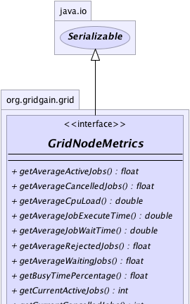
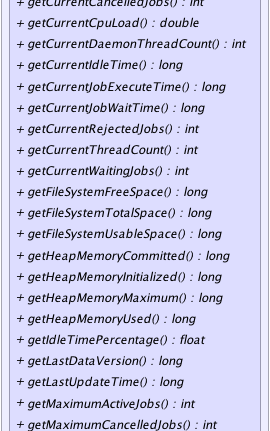
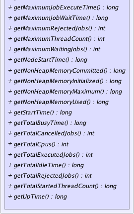

|
|

|

|
|

|

|

|
GridGain™ 3.6.0c
Community Edition |
|||||||||
| PREV CLASS NEXT CLASS | FRAMES NO FRAMES | |||||||||
| SUMMARY: NESTED | FIELD | CONSTR | METHOD | DETAIL: FIELD | CONSTR | METHOD | |||||||||
public interface GridNodeMetrics
This class represents runtime information on a node. Apart from obvious statistical value, this information is used for implementation of load balancing, failover, and collision SPIs. For example, collision SPI in combination with fail-over SPI could check if other nodes don't have any active or waiting jobs and fail-over some jobs to those nodes.
Node metrics for any node can be accessed via GridNode.metrics()
method. Keep in mind that there will be a certain network delay (usually
equal to heartbeat delay) for the accuracy of node metrics. However, when accessing
metrics on local node Grid.localNode().getMetrics()
the metrics are always accurate and up to date.
Local node metrics are registered as MBean and can be accessed from
any JMX management console. The simplest way is to use standard jconsole
that comes with JDK as it also provides ability to view any node parameter
as a graph.
| Wiki | |
| Forum |
GridProjectionMetrics
|  |
|  |
|  |
| Method Summary | |
|---|---|
float |
getAverageActiveJobs()
Gets average number of active jobs concurrently executing on the node. |
float |
getAverageCancelledJobs()
Gets average number of cancelled jobs this node ever had running concurrently. |
double |
getAverageCpuLoad()
Gets average of CPU load values over all metrics kept in the history. |
double |
getAverageJobExecuteTime()
Gets average time a job takes to execute on the node. |
double |
getAverageJobWaitTime()
Gets average time jobs spend waiting in the queue to be executed. |
float |
getAverageRejectedJobs()
Gets average number of jobs this node rejects during collision resolution operations. |
float |
getAverageWaitingJobs()
Gets average number of waiting jobs this node had queued. |
float |
getBusyTimePercentage()
Gets percentage of time this node is busy executing jobs vs. idling. |
int |
getCurrentActiveJobs()
Gets number of currently active jobs concurrently executing on the node. |
int |
getCurrentCancelledJobs()
Gets number of cancelled jobs that are still running. |
double |
getCurrentCpuLoad()
Returns the system load average for the last minute. |
int |
getCurrentDaemonThreadCount()
Returns the current number of live daemon threads. |
long |
getCurrentIdleTime()
Gets time this node spend idling since executing last job. |
long |
getCurrentJobExecuteTime()
Gets longest time a current job has been executing for. |
long |
getCurrentJobWaitTime()
Gets current time an oldest jobs has spent waiting to be executed. |
int |
getCurrentRejectedJobs()
Gets number of jobs rejected after more recent collision resolution operation. |
int |
getCurrentThreadCount()
Returns the current number of live threads including both daemon and non-daemon threads. |
int |
getCurrentWaitingJobs()
Gets number of queued jobs currently waiting to be executed. |
long |
getFileSystemFreeSpace()
Returns the number of unallocated bytes in the partition. |
long |
getFileSystemTotalSpace()
Returns the size of the partition. |
long |
getFileSystemUsableSpace()
Returns the number of bytes available to this virtual machine on the partition. |
long |
getHeapMemoryCommitted()
Returns the amount of heap memory in bytes that is committed for the JVM to use. |
long |
getHeapMemoryInitialized()
Returns the amount of heap memory in bytes that the JVM initially requests from the operating system for memory management. |
long |
getHeapMemoryMaximum()
Returns the maximum amount of heap memory in bytes that can be used for memory management. |
long |
getHeapMemoryUsed()
Returns the current heap size that is used for object allocation. |
float |
getIdleTimePercentage()
Gets percentage of time this node is idling vs. executing jobs. |
long |
getLastDataVersion()
Data grid assigns incremental versions to all cache operations. |
long |
getLastUpdateTime()
Gets last update time of this node metrics. |
int |
getMaximumActiveJobs()
Gets maximum number of jobs that ever ran concurrently on this node. |
int |
getMaximumCancelledJobs()
Gets maximum number of cancelled jobs this node ever had running concurrently. |
long |
getMaximumJobExecuteTime()
Gets time it took to execute the longest job on the node. |
long |
getMaximumJobWaitTime()
Gets maximum time a job ever spent waiting in a queue to be executed. |
int |
getMaximumRejectedJobs()
Gets maximum number of jobs rejected at once during a single collision resolution operation. |
int |
getMaximumThreadCount()
Returns the maximum live thread count since the JVM started or peak was reset. |
int |
getMaximumWaitingJobs()
Gets maximum number of waiting jobs this node had. |
long |
getNodeStartTime()
Returns the start time of grid node in milliseconds. |
long |
getNonHeapMemoryCommitted()
Returns the amount of non-heap memory in bytes that is committed for the JVM to use. |
long |
getNonHeapMemoryInitialized()
Returns the amount of non-heap memory in bytes that the JVM initially requests from the operating system for memory management. |
long |
getNonHeapMemoryMaximum()
Returns the maximum amount of non-heap memory in bytes that can be used for memory management. |
long |
getNonHeapMemoryUsed()
Returns the current non-heap memory size that is used by Java VM. |
long |
getStartTime()
Returns the start time of the JVM in milliseconds. |
long |
getTotalBusyTime()
Gets total time this node spent executing jobs. |
int |
getTotalCancelledJobs()
Gets total number of cancelled jobs. |
int |
getTotalCpus()
Returns the number of CPUs available to the Java Virtual Machine. |
int |
getTotalExecutedJobs()
Gets total number of jobs handled by the node. |
long |
getTotalIdleTime()
Gets total time this node spent idling (not executing any jobs). |
int |
getTotalRejectedJobs()
Gets total number of jobs this node rejects during collision resolution operations. |
long |
getTotalStartedThreadCount()
Returns the total number of threads created and also started since the JVM started. |
long |
getUpTime()
Returns the uptime of the JVM in milliseconds. |
| Method Detail |
|---|
@GridMBeanDescription(value="Last update time of this node metrics.") long getLastUpdateTime()
@GridMBeanDescription(value="Maximum number of jobs that ever ran concurrently on this node.") int getMaximumActiveJobs()
GridNodeMetrics.getTotalExecutedJobs()
metric and only reflects maximum number of jobs that ran at the same time.
Note: all aggregated metrics like average, minimum, maximum, total, count are calculated over all the metrics kept in history. The history size is set via either one or both of configuration settings:
@GridMBeanDescription(value="Number of currently active jobs concurrently executing on the node.") int getCurrentActiveJobs()
@GridMBeanDescription(value="Average number of active jobs concurrently executing on the node.") float getAverageActiveJobs()
Note: all aggregated metrics like average, minimum, maximum, total, count are calculated over all the metrics kept in history. The history size is set via either one or both of configuration settings:
@GridMBeanDescription(value="Maximum number of waiting jobs this node had.") int getMaximumWaitingJobs()
Note: all aggregated metrics like average, minimum, maximum, total, count are calculated over all the metrics kept in history. The history size is set via either one or both of configuration settings:
@GridMBeanDescription(value="Number of queued jobs currently waiting to be executed.") int getCurrentWaitingJobs()
@GridMBeanDescription(value="Average number of waiting jobs this node had queued.") float getAverageWaitingJobs()
Note: all aggregated metrics like average, minimum, maximum, total, count are calculated over all the metrics kept in history. The history size is set via either one or both of configuration settings:
@GridMBeanDescription(value="Maximum number of jobs rejected at once during a single collision resolution operation.") int getMaximumRejectedJobs()
Note: all aggregated metrics like average, minimum, maximum, total, count are calculated over all the metrics kept in history. The history size is set via either one or both of configuration settings:
@GridMBeanDescription(value="Number of jobs rejected after more recent collision resolution operation.") int getCurrentRejectedJobs()
@GridMBeanDescription(value="Average number of jobs this node rejects during collision resolution operations.") float getAverageRejectedJobs()
Note: all aggregated metrics like average, minimum, maximum, total, count are calculated over all the metrics kept in history. The history size is set via either one or both of grid configuration settings:
@GridMBeanDescription(value="Total number of jobs this node rejects during collision resolution operations.") int getTotalRejectedJobs()
Note: all aggregated metrics like average, minimum, maximum, total, count are calculated over all the metrics kept in history. The history size is set via either one or both of configuration settings:
@GridMBeanDescription(value="Maximum number of cancelled jobs this node ever had running concurrently.") int getMaximumCancelledJobs()
@GridMBeanDescription(value="Number of cancelled jobs that are still running.") int getCurrentCancelledJobs()
@GridMBeanDescription(value="Average number of cancelled jobs this node ever had running concurrently.") float getAverageCancelledJobs()
Note: all aggregated metrics like average, minimum, maximum, total, count are calculated over all the metrics kept in history. The history size is set via either one or both of configuration settings:
@GridMBeanDescription(value="Total number of cancelled jobs since node startup.") int getTotalCancelledJobs()
Note: all aggregated metrics like average, minimum, maximum, total, count are calculated over all the metrics kept in history. The history size is set via either one or both of configuration settings:
@GridMBeanDescription(value="Total number of jobs handled by the node.") int getTotalExecutedJobs()
Note: all aggregated metrics like average, minimum, maximum, total, count are calculated over all the metrics kept in history. The history size is set via either one or both of configuration settings:
@GridMBeanDescription(value="Maximum time a job ever spent waiting in a queue to be executed.") long getMaximumJobWaitTime()
Note: all aggregated metrics like average, minimum, maximum, total, count are calculated over all the metrics kept in history. The history size is set via either one or both of configuration settings:
@GridMBeanDescription(value="Current wait time of oldest job.") long getCurrentJobWaitTime()
@GridMBeanDescription(value="Average time jobs spend waiting in the queue to be executed.") double getAverageJobWaitTime()
Note: all aggregated metrics like average, minimum, maximum, total, count are calculated over all the metrics kept in history. The history size is set via either one or both of configuration settings:
@GridMBeanDescription(value="Time it took to execute the longest job on the node.") long getMaximumJobExecuteTime()
Note: all aggregated metrics like average, minimum, maximum, total, count are calculated over all the metrics kept in history. The history size is set via either one or both of configuration settings:
@GridMBeanDescription(value="Longest time a current job has been executing for.") long getCurrentJobExecuteTime()
@GridMBeanDescription(value="Average time a job takes to execute on the node.") double getAverageJobExecuteTime()
Note: all aggregated metrics like average, minimum, maximum, total, count are calculated over all the metrics kept in history. The history size is set via either one or both of configuration settings:
@GridMBeanDescription(value="Total time this node spent executing jobs.") long getTotalBusyTime()
@GridMBeanDescription(value="Total time this node spent idling (not executing any jobs).") long getTotalIdleTime()
@GridMBeanDescription(value="Time this node spend idling since executing last job.") long getCurrentIdleTime()
@GridMBeanDescription(value="Percentage of time this node is busy executing jobs vs. idling.") float getBusyTimePercentage()
1 and greater than or equal to 0)@GridMBeanDescription(value="Percentage of time this node is idling vs. executing jobs.") float getIdleTimePercentage()
1 and greater than or equal to 0)@GridMBeanDescription(value="The number of CPUs available to the Java Virtual Machine.") int getTotalCpus()
Runtime.availableProcessors()
method.
Note that this value may change during successive invocations of the virtual machine.
@GridMBeanDescription(value="The system load average; or a negative value if not available.") double getCurrentCpuLoad()
If the load average is not available, a negative value is returned.
This method is designed to provide a hint about the system load and may be queried frequently. The load average may be unavailable on some platform where it is expensive to implement this method.
If you are running JDK 1.6 or above, then this method is equivalent to
OperatingSystemMXBean.getSystemLoadAverage() method. Otherwise,
for JDK 1.5 Hyperic CIGAR monitoring will be used. Note, however, that
JDK 1.6 does not provide load average on some operating system (including
Windows Vista) and in many cases provides wrong values.
In such cases Hyperic Sigar should be used (which is default configuration)
to provide proper system load average value.
Note that Hyperic CIGAR is licensed under GPL. If this license is not
suitable for your business, remove hyperic libs from your classpath. In
case if this method will not detect JDK 1.6 and will not find CIGAR
libraries in the classpath, -1 will be returned.
[0, 1] range.
Negative value if not available.@GridMBeanDescription(value="Average of CPU load values over all metrics kept in the history.") double getAverageCpuLoad()
Note: all aggregated metrics like average, minimum, maximum, total, count are calculated over all the metrics kept in history. The history size is set via either one or both of configuration settings:
[0, 1] range over all metrics kept
in the history.@GridMBeanDescription(value="The initial size of memory in bytes; -1 if undefined.") long getHeapMemoryInitialized()
-1 if the initial memory size is undefined.
This value represents a setting of the heap memory for Java VM and is not a sum of all initial heap values for all memory pools.
Note: this is not an aggregated metric and it's calculated from the time of the node's startup.
-1 if undefined.@GridMBeanDescription(value="Current heap size that is used for object allocation.") long getHeapMemoryUsed()
used heap memory values of all heap memory pools.
The amount of used memory in the returned is the amount of memory occupied by both live objects and garbage objects that have not been collected, if any.
Note: this is not an aggregated metric and it's calculated from the time of the node's startup.
@GridMBeanDescription(value="The amount of committed memory in bytes.") long getHeapMemoryCommitted()
committed heap memory values of all heap memory pools.
Note: this is not an aggregated metric and it's calculated from the time of the node's startup.
@GridMBeanDescription(value="The maximum amount of memory in bytes; -1 if undefined.") long getHeapMemoryMaximum()
-1
if the maximum memory size is undefined.
This amount of memory is not guaranteed to be available for memory management if it is greater than the amount of committed memory. The JVM may fail to allocate memory even if the amount of used memory does not exceed this maximum size.
This value represents a setting of the heap memory for Java VM and is not a sum of all initial heap values for all memory pools.
Note: this is not an aggregated metric and it's calculated from the time of the node's startup.
-1 if undefined.@GridMBeanDescription(value="The initial size of memory in bytes; -1 if undefined.") long getNonHeapMemoryInitialized()
-1 if the initial memory size is undefined.
This value represents a setting of non-heap memory for Java VM and is not a sum of all initial heap values for all memory pools.
Note: this is not an aggregated metric and it's calculated from the time of the node's startup.
-1 if undefined.@GridMBeanDescription(value="Current non-heap memory size that is used by Java VM.") long getNonHeapMemoryUsed()
used non-heap memory values of all non-heap memory pools.
Note: this is not an aggregated metric and it's calculated from the time of the node's startup.
Note: this is not an aggregated metric and it's calculated from the time of the node's startup.
@GridMBeanDescription(value="Amount of non-heap memory in bytes that is committed for the JVM to use.") long getNonHeapMemoryCommitted()
committed non-heap memory values of all non-heap memory pools.
Note: this is not an aggregated metric and it's calculated from the time of the node's startup.
@GridMBeanDescription(value="Maximum amount of non-heap memory in bytes that can be used for memory management. -1 if undefined.") long getNonHeapMemoryMaximum()
-1
if the maximum memory size is undefined.
This amount of memory is not guaranteed to be available for memory management if it is greater than the amount of committed memory. The JVM may fail to allocate memory even if the amount of used memory does not exceed this maximum size.
This value represents a setting of the non-heap memory for Java VM and is not a sum of all initial non-heap values for all memory pools.
Note: this is not an aggregated metric and it's calculated from the time of the node's startup.
-1 if undefined.@GridMBeanDescription(value="Uptime of the JVM in milliseconds.") long getUpTime()
@GridMBeanDescription(value="Start time of the JVM in milliseconds.") long getStartTime()
long getNodeStartTime()
@GridMBeanDescription(value="Current number of live threads.") int getCurrentThreadCount()
@GridMBeanDescription(value="The peak live thread count.") int getMaximumThreadCount()
Note: this is not an aggregated metric and it's calculated from the time of the node's startup.
@GridMBeanDescription(value="The total number of threads started.") long getTotalStartedThreadCount()
Note: this is not an aggregated metric and it's calculated from the time of the node's startup.
@GridMBeanDescription(value="Current number of live daemon threads.") int getCurrentDaemonThreadCount()
@GridMBeanDescription(value="Number of unallocated bytes in the partition.") long getFileSystemFreeSpace()
@GridMBeanDescription(value="Size of the partition.") long getFileSystemTotalSpace()
@GridMBeanDescription(value="Number of bytes available to this virtual machine on the partition.") long getFileSystemUsableSpace()
@GridMBeanDescription(value="Last data version.") long getLastDataVersion()
|
GridGain™ 3.6.0c
Community Edition |
|||||||||
| PREV CLASS NEXT CLASS | FRAMES NO FRAMES | |||||||||
| SUMMARY: NESTED | FIELD | CONSTR | METHOD | DETAIL: FIELD | CONSTR | METHOD | |||||||||
|
GridGain - Real Time Big Data
|
|
|
|